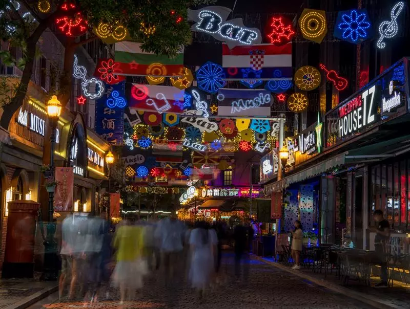
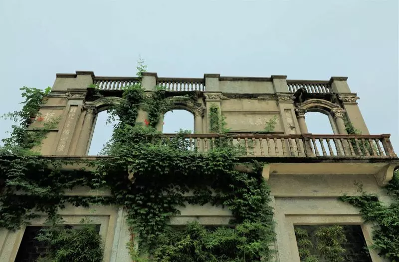
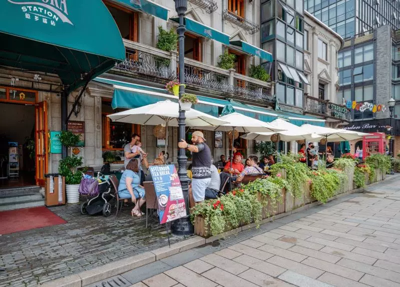
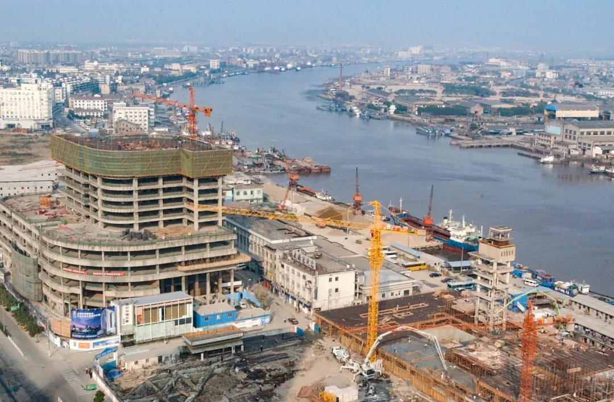
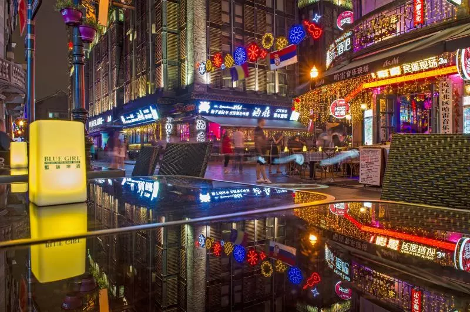

> 老外滩
这里有酒，你有故事么？
酒吧一条街、年轻人聚集地、欧陆风情建筑长廊......提起宁波老外滩，大多数人想到的，就是这些词汇。
作为开埠比上海外滩早了20年的外滩，这里曾有过最繁华的街道：宁波第一家洋行热热闹闹地在此处开业；巡捕房改成的警察局里穿制服的警察们威武帅气；最早的邮局每天清晨都有大批的邮件飞往世界各地；老码头的船鸣着汽笛在甬江上载着外出的宁波人走向外面的世界。
宁波老外滩自唐宋以来就是最繁华的港口之一，清初中国和日本尚有贸易往来，在清代实行全面闭关之时，宁波是唯一保留了对外贸易的特殊港口。这种特殊的港口地位从1644年到1684年左右，时间长达约40年。
1842年鸦片战争后，清政府签订了《南京条约》， 宁波作为五口通商口岸之一，各国商人蜂拥至宁。1844年正式开埠。不久，江北岸便发展成为英、法、美三国侨民居留区域。是中国最早的“租界”之一。
这个位于三江口江北岸的城市地标，见证了三江水的潮起潮落，也见证了宁波这座城的沧桑变迁。
2005年1月1日，经过百年落寞，投资6亿元的宁波老外滩重新开埠，随后参照上海新天地引进的业态，几乎囊括了个性消费的所有功能，如城建展馆、星级酒店、国际影院、世界美食、城市公寓、行业会馆、生活天地等，形成了崭新的独具风韵的生活服务区，如今已经成为时下年轻人常去的休闲场所。
如今，宁波市以甬江北岸地块为中心，拟建设宁波文创港，规划面积约6平方公里，而位列其中的宁波老外滩，也将在新一轮建设中再次升级。
时代在前进，城市总有新变化。在期待老外滩换新颜的同时，我们也应该用手中的相机为它留下此刻，记录下这里的一砖一瓦、一人一事、一草一木，为梳理城市脉络留下宝贵的影像记忆。
